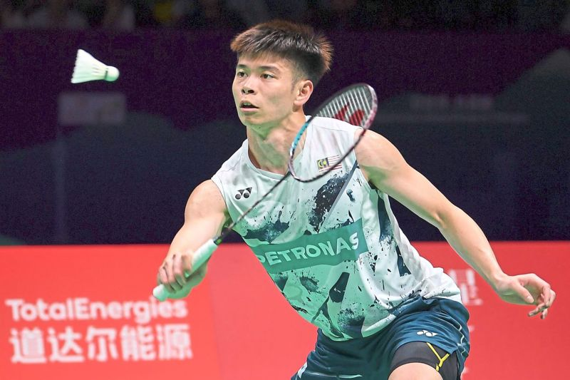

.png)
Thursday, 09 May 2024
Motivated: Leong Jun Hao hopes to ride on the momentum of his Thomas Cup campaign to do well in future.
PETALING JAYA: The Thomas Cup campaign in Chengdu last week has reignited the fire in Leong Jun Hao and he is aiming to continue that momentum in the Thailand Open and the Malaysians Masters. Jun Hao’s motivation has been further fuelled by the chance of playing against Anders Antonsen of Denmark at the Academy Badminton Malaysia (ABM) in Bukit Kiara this week. Antonsen has made a stopover in Kuala Lumpur before playing at the Thailand Open from May 14-19 where he is the top seed. The world No. 4 will also compete at the Malaysians Masters from May 21-26. At the Thomas Cup Jun Hao, the world No. 37, had beaten Hong Kong’s Angus Ng Ka Long in their group match as well as Koki Watanabe in Malaysia’s 3-2 quarter-final win over Japan as the second singles.
Malaysia, despite lacking full strength, reached the semi-finals where they lost 1-3 to eventual champions Indonesia. “I’m enjoying good form and motivated after the Thomas Cup and want to keep this going in the BWF world tour tournaments,” said Jun Hao. “I’m not looking at any target but just want to focus on improving my world ranking.
“It is also good to get the chance to train with a top player like Antonsen as I can learn a lot.” Badminton World Federation (BWF) had also conducted a redraw due to an anomaly detected in the seeding. This also presented Jun Hao with an easier draw as he will play Su Li-yang of Taiwan instead of Lu Guangzu of China in the previous draw. A victory could see him play either world champion Kunlavut Vitidsarn of Thailand or Rasmus Gemke of Denmark in the second round. World No. 10 Lee Zii Jia is also in the draw where he will open his campaign against Kantaphon Wangcharoen of Thailand but the Malaysian’s participation is still in doubt. His coach Wong Tat Meng said a decision will be made on Zii Jia’s availability in Bangkok in the next few days. Jun Hao, who was supposed to play in the qualifying rounds at the Malaysian Masters, should also be promoted to the main draw following the withdrawals of Indonesia duo world No. 3 Jonatan Christie and world No. 7 Anthony Ginting.